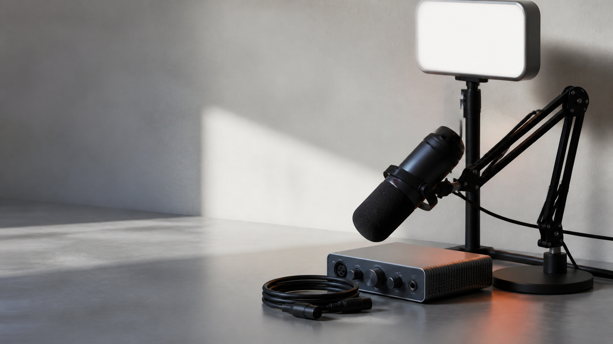

Elgato Stream Deck MK.2
Convierte las acciones repetidas de OBS, Discord y tus herramientas de emisión en gestos físicos.
Hardware para creadores
Micrófonos, control y luz elegidos para que tu directo tenga intención desde el primer minuto.
La selección parte de un criterio simple: cada pieza debe resolver un problema real de audio, control o encuadre.
Cómo elegimos cada recomendaciónSelección de estudio
Filtra por escenario y compara solo lo que tiene sentido para tu mesa.
Convierte las acciones repetidas de OBS, Discord y tus herramientas de emisión en gestos físicos.

La opción directa para aislar mejor la voz sin montar una cadena XLR.

Detalle vocal y mezcla por canales para un escritorio ya tratado acústicamente.

Un clásico de podcast cuando el proyecto ya pide preamplificación y más control.


Una solución sencilla para separar tu imagen del fondo antes de invertir en una cámara más cara.

Decide con contexto
Consulta precio, conexión, tipo de cápsula y el papel que cada producto cumple en un setup real.
Ir al comparadorAntes de mirar una oferta, revisa tu habitación, el flujo de trabajo y el plano de cámara.
Un micrófono dinámico ayuda a controlar ecos y ruido cuando grabas en una habitación normal.
Un controlador físico libera atención para hablar, jugar o entrevistar sin perder el ritmo.
Un brazo de perfil bajo y una luz frontal resuelven más de lo que parece antes de cambiar de cámara.
Preguntas frecuentes
Lo esencial antes de elegir tu primer micrófono, controlador o soporte.